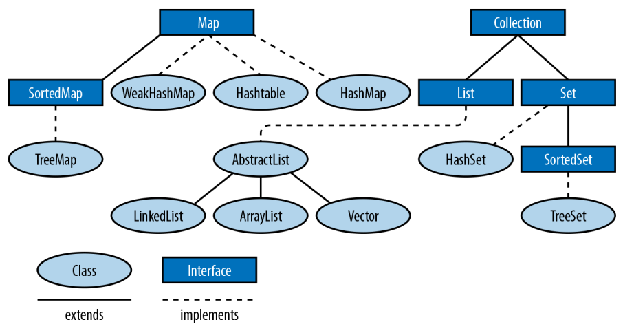

Μνημόνευμα JVM
Publié le 28 May 2022
πίνακας περιεχο</tool_call>ν
αλφαριθμητικά και χαρακτήρες
import java.text.Collator
import java.util.*
import kotlin.test.*
class StringsTest {
@Test
fun `chaines de caractères et caractères`() {
//inférence de type
val s = "C'est"
assertEquals("C'est", s)
//concaténation
val t: String = s + " le moment."
assertEquals("C'est le moment.", t)
// StringBuilder
val t1: String = s + buildString { append(" le moment.") }
assertEquals("C'est le moment.", t1)
//interpolation
val t2 = "$s le moment."
assertEquals("C'est le moment.", t2)
//multiligne chaine de caractères
val t3 = """$s le moment."""
assertEquals("C'est le moment.", t3)
//conversion de type
val t4 = t + " " + 23.4
assertEquals("C'est le moment. 23.4", t4)
val t5 = 'C'.toString()
assertEquals("C", t5)
//taille de la chaine de caractères
assertEquals(16, t.length)
//sous-chaine d'une chaine de caractères
//retourne une chaine de caractères contenant,
//les caractères aux positions x à y-1
//sub = t.substring(x, y)
//t = "C'est le moment."
//retourne les caractères 6 et 7
var sub = t.substring(6, 8)
assertEquals("le", sub)
//retourne les caractères 0 à 4
sub = t.substring(0, 5)
assertEquals("C'est", sub)
//la longueur d'une sous-chaine est toujours égale (y-x)
val numChars = sub.length
assertEquals(5 - 0, numChars)
//extraction des caractères d'une chaine
assertEquals('e', t.elementAt(2))
assertEquals('e', t.get(2))
assertEquals('e', t[2])
//conversion d'une chaine en tableau de caractères
val ca = t.toCharArray()
assertEquals(t.length, ca.size)
t.mapIndexed { index, char -> assertEquals(char, ca[index]) }
//place les 4 premiers caractères de t1
//dans le tableau ca a la position 2
(t as java.lang.String).getChars(
/* srcBegin = */ 0,
/* srcEnd = */ 3,
/* dst = */ ca,
/* dstBegin = */ 1
)
assertEquals("CC'et le moment.", String(ca))
//colle tous les caractères dans un meme string
assertEquals("CC'et le moment.", ca.concatToString())
//to lower case
assertEquals("c'est le moment.", t.toLowerCase())
assertEquals("c'est le moment.", t.lowercase())
//to upper case
assertEquals("C'EST LE MOMENT.", t.toUpperCase())
assertEquals("C'EST LE MOMENT.", t.uppercase())
//comparaison de chaines de caractères
//t = "C'est le moment."
assertFalse(t.equals("hello"))
assertFalse(t == "hello")
//ignore la casse
assertTrue(t.equalsIgnoreCase("C'EST LE MOMENT."))
assertTrue(t.equals("C'EST LE MOMENT.", ignoreCase = true))
//démarre par
assertTrue(t.startsWith("C'est"))
//se finit par
assertTrue(t.endsWith("le moment."))
//compareTo
//retourne une valeur < 0, car s est
//alphabétiquement avant "N'est"
val r1: Int = s.compareTo("N'est")
assertTrue(r1 < 0)
//variante ignorant la casse
val r1Prime: Int = (s as java.lang.String).compareToIgnoreCase("n'est")
assertTrue(r1Prime < 0)
//retourne 0 si les chaines sont equivalente
val r2: Int = s.compareTo("C'est")
assertEquals(0, r2)
//retourne une valeur > 0 car s vient apres "B'est"
val r3: Int = s.compareTo("B'est")
assertTrue(r3 > 0)
//Recherche de caractères et de sous-chaines de caractères
//recherche de caractères
//position du premier caractères 't'
var pos = t.indexOf('t')
assertEquals(4, pos)
//position du suivant
pos = t.indexOf('t', pos + 1)
assertEquals(14, pos)
//retour d'érreur -1 si absence de suivant
pos = t.indexOf('t', pos + 1)
assertEquals(-1, pos)
//position du dernier 't' dans la chaine: 14
pos = t.lastIndexOf('t')
assertEquals(14, pos)
//recherche de 't' vers l'arrière a partir du caractères 13
pos = t.lastIndexOf('t', pos - 1)
assertEquals(4, pos)
//recherche de sous-chaines
//retourne 2
pos = t.indexOf("est")
assertEquals(2, pos)
//"est" n'apparait qu'une seule fois: retourne -1
pos = t.indexOf("est", pos + 1)
assertEquals(-1, pos)
//recherche d'une sous-chaine depuis l'arrière
//t = "C'est le moment."
//retourne 6
pos = t.lastIndexOf("le ")
assertEquals(6, pos)
//extrait depuis la position 9,
//renvoi toute la chaine après "le "
val noun = t.substring(pos + 3)
assertEquals(-1, noun.indexOf("le "))
//remplacement de toutes les instances d'un caractère
//par un autre caractère
//ne fonctionne que avec les caractères, pas les chaines
val exclaim: String = t.replace('.', '!')
assertEquals('!', exclaim.get(exclaim.length - 1))
assertEquals(exclaim.length - 1, exclaim.indexOf('!'))
assertEquals(-1, exclaim.indexOf('.'))
//suppression des espaces blancs
//au début et à la fin d'une chaine
val noextraspaces = t.trim()
assertNotEquals(' ', noextraspaces.get(0))
assertNotEquals(' ', noextraspaces.get(noextraspaces.length - 1))
//extraction des instances uniques de chaines de caractères
//avec intern()
val s1 = s.intern()
assertEquals(s, s1)
val s2 = "C'est".intern()
assertEquals("C'est", s2)
assertEquals(s1, s2)
//StringBuilder pour manipuler les caractères d'une chaine de caractères
//crée un tampon StringBuilder à partir d'une chaine de caractères
val b = StringBuilder("N'est")
//extrait et définit des caractères individuel du tampon StringBuilder
//le caractères à l'index 0
val c: Char = b.get(0)
assertEquals('N', c)
//modifier le premier caractère de la chaine
b.setCharAt(0, 'C')
assertEquals(s, b.toString())
//ajouter des données à un StringBuilder
b.append(' ')
b.append("le moment.")
b.append(23)
//insère des chaines de caractères ou autre dans le StringBuilder
b.insert(6, "pas ")
assertEquals("C'est pas le moment.23", b.toString())
//remplace un sous ensemble de caractères
//avec une chaine de caractères donnée
b.replace(2, 9, "est")
assertEquals("C'est le moment.23", b.toString())
//supprime les caractères
b.delete(15, 18)
assertEquals("C'est le moment", b.toString())
b.deleteCharAt(2)
assertEquals("C'st le moment", b.toString())
//insert à la postion 2 et décale reste à droite(sans perte de données)
b.insert(2, 'e')
//tronque la taille de la donnée
b.setLength(5)
assertEquals("C'est", b.toString())
//inverse les caractères de la chaine
b.reverse()
assertEquals("tse'C", b.toString())
//écrase le StringBuilder, pret à etre réutilisé
b.setLength(0)
assertEquals("", b.toString())
//java.util.StringTokenizer pour fragmenter une chaine
//de caractères en un ensemble de mots
var st = StringTokenizer(t)
//nb d'items encore présentent dans la file
assertEquals(3, st.countTokens())
//est ce que il y a encore des items dans la file
assertTrue(st.hasMoreTokens())
//récupérer le token courrant
assertEquals("C'est", st.nextToken())
assertEquals("le", st.nextToken())
assertEquals("moment.", st.nextToken())
assertFalse(st.hasMoreTokens())
assertEquals(0, st.countTokens())
//extraire des occurences de mots délimités
//par des caractères autres que des expaces.
val str = "a:b:c:d"
st = StringTokenizer(str, ":")
assertEquals(4, st.countTokens())
assertTrue(st.hasMoreTokens())
assertEquals("a", st.nextToken())
assertEquals("b", st.nextToken())
assertEquals("c", st.nextToken())
assertEquals("d", st.nextToken())
assertFalse(st.hasMoreTokens())
assertEquals(0, st.countTokens())
//text="C'est le moment."
val text = t.toCharArray()
var p = 0
//sauter les espaces de tete
//pour ramener p à la position du premier caractère imprimable
while ((p < text.size) &&
(Character.isWhitespace(text[p]))
) p++
assertEquals(0, p)
assertEquals("C'est le moment.", text.concatToString())
//met le premier mot du texte en majuscule
while (p < text.size && Character.isLetter(text[p])) {
text[p] = Character.toUpperCase(text[p])
p++
}
assertEquals(1, p)
assertEquals('C', text[0])
assertTrue(Character.isUpperCase(text[0]))
assertFalse(Character.isLetter(text[1]))
//comparer des chaines de caractères
// avec les contrainte la locale système
val col = Collator.getInstance()
//le résulat est négatif car chica
//est avant chico dans l'ordre alphabétique
assertTrue(col.compare("chica", "chico") < 0)
}
}αριθμοί και μαθηματικά
import java.math.BigInteger
import java.security.SecureRandom
import java.text.NumberFormat
import java.util.*
import kotlin.test.*
class NumbersMathTest {
@Test
fun `Nombres et Math`() {
//Constantes utiles
Byte.MIN_VALUE
Byte.MAX_VALUE
Short.MIN_VALUE
Short.MAX_VALUE
Float.MIN_VALUE
Float.MAX_VALUE
Math.PI
Math.E
val s = "-42"
//conversion de chaine de caractères
//vers un nombre, si possible.
var b: Byte = java.lang.Byte.parseByte(s)
var sh: Short = java.lang.Short.parseShort(s)
var i: Int = java.lang.Integer.parseInt(s)
var l: Long = java.lang.Long.parseLong(s)
var f: Float = java.lang.Float.parseFloat(s)
var d: Double = java.lang.Double.parseDouble(s)
//valeur exacte
val f_exac = java.lang.Float.valueOf(s)
val d_exac = java.lang.Double.valueOf(s)
//les routines de conversions entière gérent
//les nombres dans diverses bases.
//1011 en binare est égal a 11 en base dix
b = java.lang.Byte.parseByte("1011", 2)
assertEquals(11, b)
//ff en base 16(hexa) est égal à 255 en base dix.
sh = java.lang.Short.parseShort("ff", 16)
assertEquals(255, sh)
//la méthode valueOf() peut gérer des bases arbitraires.
i = java.lang.Integer.valueOf("egg", 17).toInt()
assertEquals(4334, i)
//la méthode decode() gére les representations octale,
//décimal, hexadécimal, en fonction du préfixe numérique
//de la chaine de caractères
//un 0 de tete signifie base 8
//un 0x de tete signifie base 16
//les autres sont en base 10
val sho = java.lang.Short.decode("0377")
//la classe Integer peut convertir les nombres
//en diverses chaines de caractères.
val decimal = java.lang.Integer.toString(42)
assertEquals("42", decimal)
val decimal_ = 42.toString()
assertEquals("42", decimal_)
val binary = java.lang.Integer.toBinaryString(42)
assertEquals("101010", binary)
val octal = java.lang.Integer.toOctalString(42)
assertEquals("52", octal)
val hex = java.lang.Integer.toHexString(42)
assertEquals("2a", hex)
val base36 = java.lang.Integer.toString(42, 36)
assertEquals("16", base36)
val base36_ = 42.toString(36)
assertEquals("16", base36_)
//java.text.NumberFormat effectue la conversion
// d'une maniere spécifique aux parametres locaux
//sans parametre prend la local systeme comme reference
val nf = NumberFormat.getNumberInstance(Locale.FRANCE)
val formatted_number = nf.format(9876543.21)
assertNotEquals("9876543.21", formatted_number)
//parse la chaine de caractères en fonction des parametres locaux(fr)
val n = nf.parse("1234567,89")
assertEquals(1234567.89, n)
//les valeurs monétaires sont parfois formaté
// d'une maniere differente des nombres
val money_format = NumberFormat.getCurrencyInstance(Locale.FRANCE)
assertEquals("123,40 €", money_format.format(1234.56))
//java.lang.Math
d = Math.toRadians(27.0)
d = Math.cos(d)
d = Math.sqrt(d)
d = Math.log(d)
d = Math.exp(d)
d = Math.pow(10.0, d)
d = Math.atan(d)
d = Math.toDegrees(d)
//arrondi au dessus
val up = Math.ceil(d)
//arrondi au dessous
val down = Math.floor(d)
//arrondi au plus près
val nearest = Math.round(d)
//java.lang.Math.Random()
val r = Math.random()
assertTrue(r >= 0.0 && r < 1.0)
//créé un nouvel objet Random, en l'initialisant
//avec l'heure courante
val generator = java.util.Random(System.currentTimeMillis())
//prochaine valeur aléatoire de taille double
d = generator.nextDouble()
assertTrue((d >= 0.0) && (d < 1.0))
//prochaine valeur aléatoire de taille float
f = generator.nextFloat()
assertTrue((f >= 0.0) && (f < 1.0))
//prochaine valeur aléatoire de taille long
l = generator.nextLong()
assertTrue(
(Math.abs(l) <= Long.MAX_VALUE) &&
(Math.abs(l) >= 0)
)
//prochaine valeur aléatoire de taille int
i = generator.nextInt()
assertTrue(
(Math.abs(i) <= java.lang.Integer.MAX_VALUE) &&
(Math.abs(i) >= 0)
)
val limit = 100
//prochaine valeur aléatoire de taille int
//la limit max du ramdom est ramené à limit
//et la limit min est 0
i = generator.nextInt(limit)
assertTrue(i in 0 until limit)
//prochaine valeur aléatoire de taille booléen
val bool = generator.nextBoolean()
assertNotNull(bool)
//valeur moyenne 0.0, déviation standard 1.0
d = generator.nextGaussian()
//randoms bytes
//rempli un tableau avec des valeurs byte aléatoires
val b_arr = ByteArray(128)
generator.nextBytes(b_arr)
b_arr.iterator().forEachRemaining {
assertTrue(
it <= Byte.MAX_VALUE &&
it >= Byte.MIN_VALUE
)
}
//java.security.SecureRandom pour les nombres aléatoires
//utilisé en cryptographie
val secure_generator = SecureRandom()
//le générateur génère sa propre tete de liste sur 16 octets
secure_generator.setSeed(secure_generator.generateSeed(16))
val sec_b_arr = ByteArray(128)
secure_generator.nextBytes(sec_b_arr)
sec_b_arr.iterator().forEachRemaining {
assertTrue(
it <= java.lang.Byte.MAX_VALUE &&
it >= java.lang.Byte.MIN_VALUE
)
}
//java.math.BigDecimal java.math.BigInteger
//pour travailler sur des grandes valeurs.
//calcule de la factorielle de 1000
var total = BigInteger.valueOf(1)
(2..1000).forEach {
total = total.multiply(BigInteger.valueOf(it.toLong()))
}
assertTrue(total.toString().length == 2568)
}
}(blank)
ημερομηνίες και ώρες
import java.text.DateFormat
import java.text.SimpleDateFormat
import java.time.Instant
import java.util.*
import kotlin.test.Test
import kotlin.test.assertEquals
import kotlin.test.assertTrue
class DatesHoursTest {
@Test
fun `Dates et heures`() {
//l'heure courante en millisecondes
val t0 = System.currentTimeMillis()
//une autre représentation de la meme information
val now = java.util.Date()
//converti un objet java.util.Date en une valeur long.
val t1 = now.getTime()
assertTrue(t1 > Instant.EPOCH.toEpochMilli())
//kotlin property access syntaxe style
val t1_prime = now.time
//java.text.DateFormat
//affiche la date d'aujourd'hui en utilisant le format
//par défaut des parametres locaux
val defaultDateFormat = DateFormat.getDateInstance()
//personnalisation du formatage et de la locale
val df = DateFormat.getDateInstance(DateFormat.LONG, Locale.FRANCE)
val localeFormattedDate = df.format(Date())
//constantes pour les styles de pattern de formatage
assertEquals(0, DateFormat.FULL)
assertEquals(1, DateFormat.LONG)
assertEquals(2, DateFormat.MEDIUM)
assertEquals(3, DateFormat.SHORT)
assertEquals(2, DateFormat.DEFAULT)
//utilise pour l'heure un format abrégé avec
//des parametres personnalisés
val tf = DateFormat.getTimeInstance(
DateFormat.SHORT,
Locale.FRANCE
)
//affiche l'heure en utilisant le format de tf
val shortTime = tf.format(Date())
assertTrue(shortTime.contains(':'))
//affiche la date et l'heure en utilisant
//un format détaillé
val longTimeStamp = DateFormat.getDateTimeInstance(
DateFormat.FULL,
DateFormat.FULL,
)
assert(longTimeStamp.format(Date()).isNotEmpty())
//utilisez java.text.SimpleDateFormat
//pour définir votre propre modele de formatage
val customFormat = SimpleDateFormat("yyyy.MM.dd")
assertEquals(10, customFormat.format(Date()).length)
//DateFormat peut également parser les date contenu dans des chaines
val kotlinAnnounceDate = customFormat.parse("2019.05.08")
//la class Date et sa représentation en millisecondes
//n'autorise qu'une forme trés simple d'arithmétique
//on ajoute 3 600 000 millisecondes à l'heure courante
val anHourFromNow = now.getTime() + (60 * 60 * 1000)
assert(anHourFromNow > now.getTime())
//java.util.Calendar
//pour manipuler les dates et heures de facon plus sophistiquée
//instanciation selon les parametres locaux
//et le fuseau horaire local
val calendar = Calendar.getInstance()
//initialisation du calendrier à la date de maintenant
calendar.setTime(now)
//détermine le jour de l'année auquel correspond la date courante
val dayOfYear = calendar.get(Calendar.DAY_OF_YEAR)
assert(dayOfYear < 366)
//réinitialisation de la date courante
calendar.set(2019, Calendar.MAY, 8)
assertEquals(4, calendar.get(Calendar.DAY_OF_WEEK))
//à quel jour du mois correspond le deuxieme mercredi de mai 2019
//set(key,value)
calendar.set(Calendar.YEAR, 2019)
calendar.set(Calendar.MONTH, Calendar.MAY)
calendar.set(Calendar.DAY_OF_WEEK, Calendar.WEDNESDAY)
//defini à quel (n=2) semaine du mois est la date
calendar.set(Calendar.DAY_OF_WEEK_IN_MONTH, 2)
//extrait le jour du mois
val dayOfMonth = calendar.get(Calendar.DAY_OF_MONTH)
assertEquals(8, dayOfMonth)
calendar.setTime(kotlinAnnounceDate)
//ajoute 30j à la date
calendar.add(Calendar.DATE, 30)
val monthAfter = calendar.getTime()
//date est elle avant ou apres?
assertTrue(monthAfter.after(kotlinAnnounceDate))
}
}ημερομηνίες και ώρες java8
Η Java 8 εισάγει το νέο πακέτο java.time, το οποίο περιέχει τις βασικές κλάσεις που
Η πλειοψηφία των προγραμματιστών δουλεύει με. Περιéchει επίσης τέσσερα υπο-πακέτα:
java.time.chrono
Εναλλακτικές χρονολογίες που οι προγραμματιστές που χρησιμοποιούν συστήματα ημερολογίων που δεν
Το να ακολουθείται το πρότυπο ISO θα αλληλεπιδρά με. Ένα παράδειγμα θα’était ένα cal ιαπωνικό
ανθεκτικό σύστημα.
java.time.format
Περιέχει το DateTimeFormatter που χρησιμοποιείται για τη μετατροπή των αντικειμένων ημερομηνίας και ώρας
σε μια συμβολοσειρά και επίσης για να αναλύσει τις συμβολοσειρές στα αντικείμενα ημερομηνίας και ώρας.
java.time.temporal
Περιέχει τις διεπαφές που απαιτούνται από τις βασικές κλάσεις ημερομηνίας και ώρας και επίσης
διαστάσεις (όπως ερωτήματα και ρυθμιστές) για προχωρημένες λειτουργίες με ημερομηνίες.
java.time.zone
Κλάσεις που χρησιμοποιούνται για τους κανόνες του υποκείμενου ωροζώνου
Η πλειοψηφία των προγραμματιστών δεν θα χρειάζονται αυτό το πακέτο.

import java.time.LocalDate
import java.time.Month
import java.time.Period
import java.time.YearMonth
import java.time.temporal.*
import java.util.HashMap
import java.util.stream.Collectors
import kotlin.test.Test
class DatesHoursJava8Test {
class BirthdayDiary {
private val birthdays: MutableMap<String, LocalDate>
init {
birthdays = HashMap()
}
fun addBirthday(
name: String, day: Int, month: Int,
year: Int
): LocalDate {
val birthday: LocalDate = LocalDate.of(year, month, day)
birthdays[name] = birthday
return birthday
}
fun getBirthdayFor(name: String): LocalDate? {
return birthdays[name]
}
fun getAgeInYear(name: String, year: Int): Int {
val period: Period = Period.between(
birthdays[name],
birthdays[name]!!.withYear(year)
)
return period.getYears()
}
fun getFriendsOfAgeIn(age: Int, year: Int): Set<String> {
return birthdays.keys.stream()
.filter { p: String -> getAgeInYear(p, year) == age }
.collect(Collectors.toSet())
}
fun getDaysUntilBirthday(name: String): Int {
val period: Period = Period.between(
LocalDate.now(),
birthdays[name]
)
return period.getDays()
}
fun getBirthdaysIn(month: Month): Set<String> {
return birthdays.entries.stream()
.filter { (_, value): Map.Entry<String, LocalDate> -> value.getMonth() === month }
.map<String> { (key): Map.Entry<String, LocalDate> -> key }
.collect(Collectors.toSet())
}
val birthdaysInCurrentMonth: Set<String>
get() = getBirthdaysIn(LocalDate.now().getMonth())
val totalAgeInYears: Int
get() = birthdays.keys.stream()
.mapToInt { p: String ->
getAgeInYear(
p,
LocalDate.now().getYear()
)
}
.sum()
}
//Les ajusteurs modifient les objets de date et d'heure. Supposons, par exemple, que nous voulions
//renvoie le premier jour d'un trimestre qui contient un horodatage particulier :
class FirstDayOfQuarter : TemporalAdjuster {
override fun adjustInto(temporal: Temporal): Temporal? {
val currentQuarter: Int = YearMonth.from(temporal)
.get(IsoFields.QUARTER_OF_YEAR)
return when (currentQuarter) {
1 -> LocalDate.from(temporal)
.with(TemporalAdjusters.firstDayOfYear())
2 -> LocalDate.from(temporal)
.withMonth(Month.APRIL.value)
.with(TemporalAdjusters.firstDayOfMonth())
3 -> LocalDate.from(temporal)
.withMonth(Month.JULY.value)
.with(TemporalAdjusters.firstDayOfMonth())
4 -> LocalDate.from(temporal)
.withMonth(Month.OCTOBER.value)
.with(TemporalAdjusters.firstDayOfMonth())
else -> null
}
}
}
enum class Quarter {
FIRST, SECOND, THIRD, FOURTH
}
//Dans quel trimestre de l'année cette date se situe-t-elle ?
class QuarterOfYearQuery : TemporalQuery<Quarter> {
override fun queryFrom(temporal: TemporalAccessor): Quarter {
val now = LocalDate.from(temporal)
return if (now.isBefore(now.with(Month.APRIL).withDayOfMonth(1)))
Quarter.FIRST
else if (now.isBefore(
now.with(Month.JULY)
.withDayOfMonth(1)
)
) Quarter.SECOND else if (now.isBefore(
now.with(Month.NOVEMBER)
.withDayOfMonth(1)
)
) Quarter.THIRD else Quarter.FOURTH
}
}
@Test
fun `Dates et heures après java 8`() {
val today = LocalDate.now()
val currentMonth = today.month
val firstMonthOfQuarter = currentMonth.firstMonthOfQuarter()
val q = QuarterOfYearQuery()
// Direct
var quarter: Quarter? = q.queryFrom(LocalDate.now())
println(quarter)
// Indirect
quarter = LocalDate.now().query(q)
println(quarter)
val now = LocalDate.now()
val fdoq: Temporal = now.with(FirstDayOfQuarter())
println(fdoq)
}
}πίνακες και συλλογές

package playground.programming
import java.util.*
import kotlin.test.Test
import kotlin.test.assertEquals
import kotlin.test.assertFalse
import kotlin.test.assertTrue
class ArrayCollectionTest {
@Test
fun `Tableaux, collections`() {
//Tableau
//java.util.Arrays définit d'utiles méthodes de manipulation de tableaux,
//y compris de tri et de recherche au sein d'un tableau
val intArray = arrayOf(10, 5, 7, -3)
//tri le tableau
Arrays.sort(intArray)
var pos = Arrays.binarySearch(intArray, 7)
//la valeur 7 est trouvé a l'index 2
assertEquals(2, pos)
//12 pas trouvé retourne une valeur negative
assert(Arrays.binarySearch(intArray, 12) < 0)
//les tableaux peuvent également etre triés
//et faire l'objet d'une recherche
val stringArray = arrayOf("le", "moment", "c'est")
assertEquals("c'est", stringArray[2])
assertEquals("le", stringArray[0])
assertEquals("moment", stringArray[1])
Arrays.sort(stringArray)
assertEquals("c'est", stringArray[0])
assertEquals("le", stringArray[1])
assertEquals("moment", stringArray[2])
//Arrays.equals() compare tous les éléments de deux tableaux
//Arrays.clone() copie tous les elements du tableau dans un autre
stringArray.forEachIndexed { i, it -> assertEquals(it, stringArray.clone()[i]) }
val data = ByteArray(100)
//Arrays.fill() initialise tous les éléments des deux tableaux
//initalise tous les éléments à -1
Arrays.fill(data, -1)
data.forEach { assertEquals(-1, it) }
//attribue aux éléments 5, 6, 7, 8 et 9 la valeur -2
Arrays.fill(data, 5, 10, -2)
((5 until (10 - 1))).forEach { assertEquals(-2, data[it]) }
//récupère le type de data
val type = data::class.java
//est ce que data est un tableau?
assertTrue(type.isArray())
//est ce que data est un tableau de byte
assertEquals(Byte::class.java, type.getComponentType())
//Collection
val s = java.util.HashSet<String>()
s.add("test")
assertTrue(s.contains("test"))
assertFalse(s.contains("test2"))
s.remove("test")
assertFalse(s.contains("test"))
val ss = TreeSet<String>()
ss.add("b")
ss.add("a")
ss.iterator().forEach { assertTrue(it == "a" || it == "b") }
//liste doublement chainée
var dll: List<String> = LinkedList<String>()
//plus efficace
val l = java.util.ArrayList<String>()
l.addAll(ss)
l.addAll(1, ss)
val obj = l.get(1)
val obj_prime = l[1]
assertEquals(obj, obj_prime)
l.set(3, "nouvel élément")
l.add("test")
l.add(0, "test2")
l.removeAt(1)
l.remove("a")
assertFalse(l.contains("a"))
l.removeAll(ss)
assertFalse(l.containsAll(ss))
assertFalse(l.isEmpty())
assertTrue(l.isNotEmpty())
val sublist = l.subList(1, 3)
val elements = l.toArray()
l.clear()
val m = HashMap<String, Integer>()
m.put("clé", Integer(42))
m["clé"] = Integer(42)
val value: Integer = m.get("clé")!!
assertEquals(Integer(42), value)
m.remove("clé")
assertTrue(m.isEmpty())
val keys = m.keys
assertTrue(keys.isEmpty())
val set = HashSet<String>()
set.add("key_1")
set.add("key_2")
set.add("key_3")
val members = set.toArray()
assertEquals(3, members.size)
val list = ArrayList<String>()
list.add("items1")
list.add("items2")
list.add("items3")
val items = list.toArray()
assertEquals(3, items.size)
//trie et recherche d'éléments sur les collections
list.add("clé")
//en premier on trie
Collections.sort(list)
//en kotlin
list.sort()
//en deuxieme on cherche
//retourne l'index du premier trouvé sinon -1
pos = Collections.binarySearch(list, "clé")
assertEquals(0, pos)
val list1 = mutableListOf(1, 2, 3, 4, 5)
val list2 = mutableListOf<Int>(0, 0, 0, 0, 0)
//d'autres méthodes intéressantes concernant Collections
//copie list1 dans list2, 2e parametre dans 1er parametre
Collections.copy(list2, list1)
//comparaison de la copy avec filter
assertTrue(list1.filterIndexed { i: Int, it: Int -> it != list2[i] }.isEmpty())
//comparaison de la copy avec map
list1.mapIndexed { index: Int, it: Int -> assertEquals(it, list2[index]) }
//rempli avec des 0
Collections.fill(list2, 0)
assertTrue(list2.none { it != 0 })
//le maximum
assertEquals(5, Collections.max(list1))
//le minimum
assertEquals(1, Collections.min(list1))
//renverse
Collections.reverse(list)
listOf("items3", "items2", "items1", "clé").mapIndexed { i: Int, it: String -> assertEquals(it, list[i]) }
//mélange la list
Collections.shuffle(list)
//retourne un ensemble immuable possédant un seul élément 0
Collections.singleton(0)
//renvoi un emballage immuable autour d'une liste
Collections.unmodifiableList(list)
//renvoi un emballage synchronisé autour d'une map, ensemble clé valeur
Collections.synchronizedMap(m)
//java.util.Properties un est objet key value
}
}System.Properties
Εδώ είναι ένας πίνακας με μερικές ενδιαφέρουσες ιδιότητες
Αυτά τα ιδιότητες είναι ενδιαφέρουσες για να έχετε πληροφορίες
στο σύστημα φιλοξενητή της JVM.
Κλειδί |
Σημασία |
διαχωριστής αρχείου |
Ο χαρακτήρας που χωρίζει τα τμήματα μιας διαδρομής αρχείου. Είναι "/" στο UNIX και "\" στα Windows. |
java.class.path |
Η διαδρομή που χρησιμοποιείται για την εύρεση καταλόγων και αρχείων JAR που περιέχουν αρχεία κλάσης. Τα στοιχεία της διαδρομής κλάσης χωρίζονται από έναν χαρακτήρα που είναι ειδικός της πλατφόρμας και καθορίζεται στην ιδιότητα path.separator. |
java.home |
Κατάλογος εγκατάστασης για το Java Runtime Environment (JRE) |
java.vendor |
�Όνομα προμηθευτή JRE |
java.vendor.url |
URL του προμηθευτή JRE |
java.version |
Αριθμός έκδοσης JRE |
διαχωριστής γραμμής |
Ακολουθία που χρησιμοποιείται από το λειτουργικό σύστημα για να χωρίζει τις γραμμές σε αρχεία κειμένου |
os.arch |
Αρχιτεκτονικό λειτουργικού συστήματος |
os.name |
Όνομα του λειτουργικού συστήματος |
os.version |
Έκδοση λειτουργικού συστήματος |
διαχωριστής διαδρομής |
Χαρακτήρας διαχωρισμού διαδρομής που χρησιμοποιείται στο java.class.path |
φάκελος χρήστη |
Κατάλογος εργασίας χρήστη |
χρήστης.σπίτι |
Κύριος κατάλογος |
χρήστης.όνομα |
Όνομα λογαριασμού χρήστη |
Threads
import java.text.DateFormat
import java.util.*
import kotlin.test.Test
class ThreadsTest {
@Test
fun `threads test`() {
//java.lang.Thread représente le thread fondamentale de l'API java
//il existe deux manière de définir un thread
//1) étendre la classe Thread ou une lambda en kotlin
//2) implémenter l'interface Runnable,
// puis passer une instance de cet objet Runnable au constructeur de Thread.
val list1: List<Int> = List(
size = 45,
init = { (1..31).random() }
)
println("list1$list1")
//facon 1
val t = Thread {
Collections.sort(list1)
println("list1 sorted$list1")
}
t.start()
val list2 = List(
size = 45,
init = { (1..31).random() }
)
println("list2$list2")
//facon 2
val sorter = BackgroundSorter(list2)
sorter.start()
//priorité des threads
//tant qu'un thread de niveau de priorité supérieure n'est pas fini
//alors celui de niveau inférieur ne peut s'exécuter
//on définit un thread avec une priorité inférieur à la normale
t.setPriority(Thread.NORM_PRIORITY - 1)
//ici on définit un thread avec une priorité inférieur à la priorité
//du thread courant
t.setPriority(Thread.currentThread().getPriority() - 1)
//Thread.yield() fait une pause pour laisser les autres threads de meme priorité s'exécuter
}
class BackgroundSorter(private val l: List<Int>) : Thread() {
override fun run() {
Collections.sort(l)
println("list2 sorted$l")
}
}
//pour l'arrêt du thread, plutôt qu'utiliser la fonction Thread.stop()
// qui laisse la memoire dans un état non controlé.
//utiliser la méthode tel que l'exemple pleaseStop()
class DummyClock(
private val df: DateFormat = DateFormat.getTimeInstance(DateFormat.MEDIUM),
private var keepRunning: Boolean = true
) : Thread() {
init {
isDaemon = true
start()
}
override fun run() {
while (keepRunning) {
println(df.format(Date()))
try {
sleep(1000)
} catch (e: InterruptedException) {
println(e.message)
}
}
}
fun pleaseStop() {
keepRunning = false
}
}
//java.util.Timer
//java.util.TimerTask
//ces classes permettent l'exécution de taches répétitives
@Test
fun `Timer et TimerTask test`() {
DummyClock()
}
}Κανονικές εκφράσεις
import java.util.*
import java.util.regex.Matcher
import java.util.regex.Pattern
import java.util.stream.Collectors
import kotlin.test.Test
import kotlin.test.assertEquals
class RegularExpressionsTest {
@Test
fun `expressions régulières`() {
val p: Pattern = Pattern.compile("honou?r")
val caesarUK = "For Brutus is an honourable man"
val mUK: Matcher = p.matcher(caesarUK)
assertEquals(true, mUK.find(), "Should matches UK spelling")
val caesarUS = "For Brutus is an honorable man"
val mUS: Matcher = p.matcher(caesarUS)
assertEquals(true, mUS.find(), "Should matches US spelling")
}
@Test
fun `expressions régulières plus complexes`() {
//Notez que nous devons utiliser \\ car nous avons besoin d'un littéral \
//et Java utilise un seul \ comme caractère d'échappement
var pStr = "\\d" // Un chiffre numérique
var text = "Apollo 13"
var p = Pattern.compile(pStr)
var m = p.matcher(text)
print(pStr + " matches " + text + "? " + m.find())
println(" ; match: " + m.group())
pStr = "[a..zA..Z]" //N'importe quelle lettre
p = Pattern.compile(pStr)
m = p.matcher(text)
print(pStr + " matches " + text + "? " + m.find())
println(" ; match: " + m.group())
//N'importe quel nombre de lettres, qui doivent toutes être comprises entre 'a' et 'j'
//mais peut-être en majuscule ou en minuscule.
pStr = "([a..jA..J]*)"
p = Pattern.compile(pStr)
m = p.matcher(text)
print(pStr + " matches " + text + "? " + m.find())
println(" ; match: " + m.group())
text = "abacab"
//'a' suivi de quatre caractères quelconques, suivi de 'b'
pStr = "a....b"
p = Pattern.compile(pStr)
m = p.matcher(text)
print(pStr + " matches " + text + "? " + m.find())
println(" ; match: " + m.group())
}
@Test
fun `Quelles chaînes correspondent à la regex ?`() {
val pStr = "\\d" // Un chiffre numérique
val p = Pattern.compile(pStr)
val ls: List<String> = Arrays.asList("Cat", "Dog", "Ice-9", "99 Luftballoons")
val containDigits: List<String> = ls.stream()
.filter(p.asPredicate())
.collect(Collectors.toList())
assert(containDigits.contains("Ice-9"))
assert(containDigits.contains("99 Luftballoons"))
assertEquals(2, containDigits.size)
}
}Πίνακας regex μηταχαρακτήρες
μεταχαρακτήρας |
λειτουργικότητα |
Σημειώσεις |
? |
Προαιρετικός χαρακτήρας—μηδέν ή μία παρουσία |
* |
Μηδέν ή περισσότερο από τον προηγούμενο χαρακτήρα |
+ |
Ένας ή περισσότεροι από τους προηγουμένους χαρακτήρες |
{M,N} |
Ανάμεσα M και N εμφανίσεις του προηγούμενου χαρακτήρα |
\d |
Ένας αριθμός |
\D |
Μη αριθμητικός χαρακτήρας |
\w |
Ένας χαρακτήρας λέξης |
Αριθμοί, γράμματα και _ |
\W |
Ένας χαρακτήρας χωρίς λέξη |
\s |
Ένας χαρακτήρας διαστήματος |
\S |
Ένας μη κενός χαρακτήρας |
\n |
Χαρακτήρας αλλαγής γραμμής |
\t |
Χαρακτήρας tabulation |
. |
Όποιος χαρακτήρας |
Δεν περιλαμβάνει τη νέα γραμμή στην Java |
[ ] |
Οποιος χαρακτήρας που βρίσκεται μέσα σε αγκύλες |
Κλήση μιας κλάσης χαρακτήρων |
[^ ] |
Κάθε χαρακτήρας που δεν βρίσκεται μέσα στα άγκιστρα |
καλείται μια ανεστραμμένη κλάση χαρακτήρων |
( ) |
Κατασκευή μιας ομάδας στοιχείων μοτίβου |
καλεσμένη μια ομάδα (ομάδα λήψης) |
| |
Καθορισμός εναλλακτικών δυνατοτήτων |
Εφαρμόσου τον λογικό OR |
^ |
Αρχή συμβολοσειράς $ Τέλος συμβολοσειράς |
συμπληρώνωhttps://www.codeurjava.com/2015/05/les-expressions-regulieres-avec-regex.html[με]